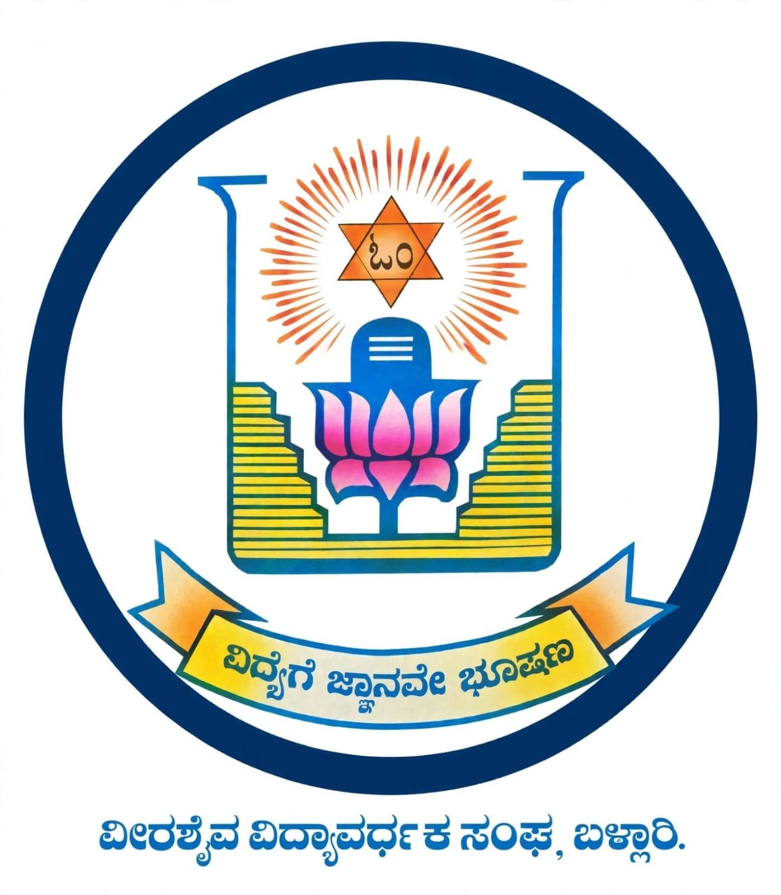
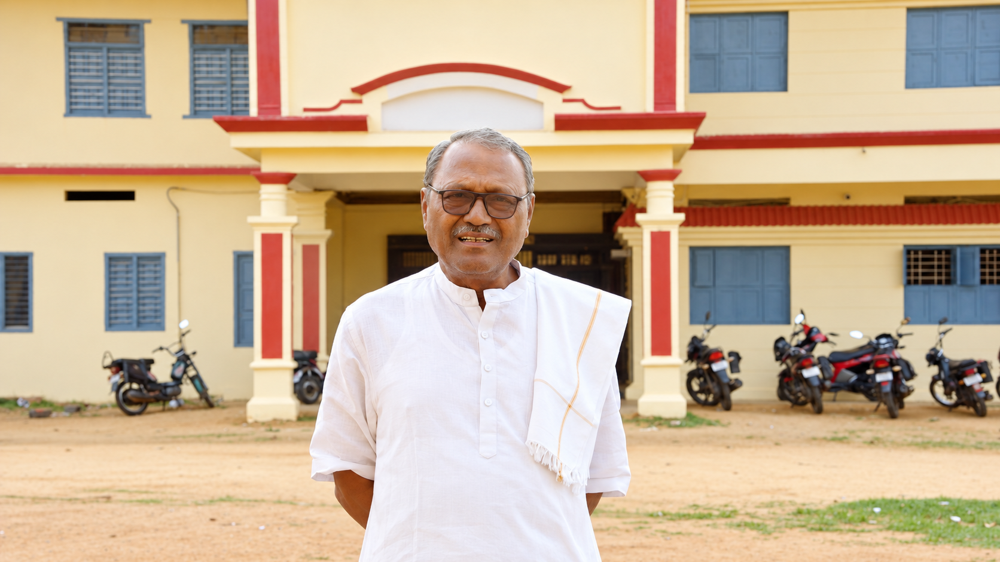
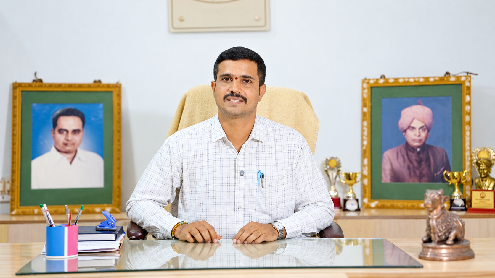
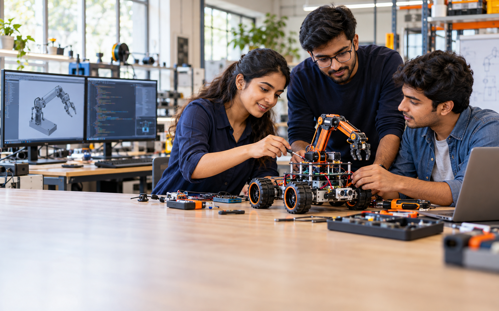
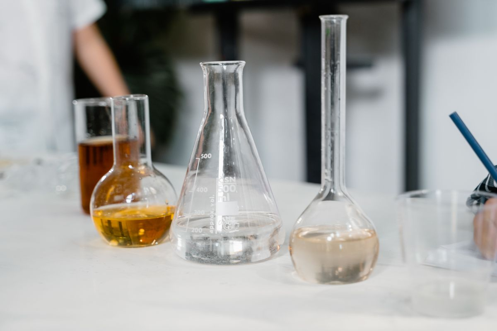
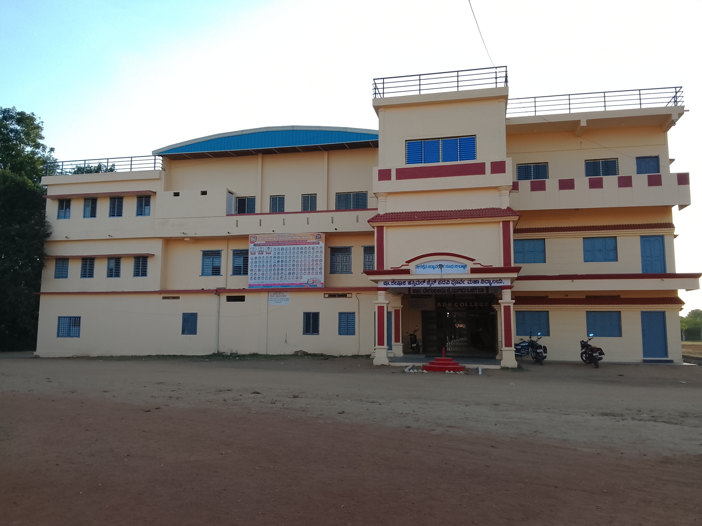

✦
Vision
To empower holistic learning and academic excellence, inspiring students across Science, Commerce and Arts to become innovative thinkers, ethical leaders and socially responsible citizens prepared for global challenges.

SSH Jain PU CollegeArts · Commerce · Science Apply nowV.V. Sangha · A.D.B. Campus · Harapanahalli
A focused pre-university institution where academic rigour, integrated competitive coaching and personal mentorship shape purposeful futures.
Our direction
Our academic ecosystem is designed to help students think clearly, act responsibly and progress confidently.
To empower holistic learning and academic excellence, inspiring students across Science, Commerce and Arts to become innovative thinkers, ethical leaders and socially responsible citizens prepared for global challenges.
To unite strong teaching, practical learning, integrated coaching, character development and personalised mentorship so every student can discover and fulfil their potential.
Institutional leadership

“Our goal is not only academic rank, but the development of compassionate leaders, innovative thinkers and responsible citizens.”
K. KotreshwaraChairmanRead full note →
“Our experienced faculty help each learner understand concepts clearly, build confidence and prepare purposefully for the future.”
Dr. Sharath A MPh.D., M.A., B.Ed., D.Com., DAESI · PrincipalRead full note →Academic achievement
A dedicated record of performance across Science, Commerce and Arts.
Space reserved for student photographs, names, streams and scores.
Space reserved for ranks, selected courses and government-seat achievers.
Space reserved for student names, events, levels and awards.
Contribution from our institution to society
Our alumni carry their college foundations into healthcare, technology, finance and public service.

Academic streams
Physics, Chemistry, Mathematics and Biology with integrated competitive preparation.
Computer Science, Economics, Business Studies and Accountancy.
HEPOK and HPEOK combinations with integrated competitive coaching.
Learning environment

Practical spaces where observation, experimentation and concepts connect.

A place for physical activity, practice and community events.
For 28 years, our college has provided quality education through highly experienced teaching faculty. We combine academics with competitive coaching, discipline, sports, cultural events and skill development so students grow into confident and capable individuals.
Dr. Sharath A MPh.D., M.A., B.Ed., D.Com., DAESI · PrincipalPre-University education is the critical bridge between school learning and professional careers. Our campus is designed to foster curiosity, discipline and holistic growth while keeping moral values at the centre of education.
K. KotreshwaraChairmanOur people
Faculty are presented in the required order: Teaching Faculty, Laboratory Team and Office Team.
Hear from our students
Space reserved for a verified student testimonial, photograph, stream and graduation year.
Student storySpace reserved for a verified student testimonial, photograph, stream and graduation year.
Student storySpace reserved for a verified student testimonial, photograph, stream and graduation year.
Student storyAdmissions 2026–27
Send an enquiry and let the college team guide you through streams, eligibility, documents and fees.
Campus calendar
This dynamic column is prepared for upcoming college announcements, activities and important dates.
Date, venue and registration information can be added dynamically.
This space is ready for sports, cultural and community events.
Important notices can be published here without redesigning the page.